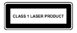

Sicherheitsinformationen und rechtliche Hinweise: g.co/pixel/safety oder Einstellungen
Quellen für Produktinformationen
Richtige Handhabung und Nutzung
Dieser Leitfaden enthält die grundlegenden Sicherheitshinweise aus den Informationen zur Sicherheit und beschränkten Garantie, die Sie zusammen mit Ihrem Pixel 6 oder Pixel 6 Pro erhalten haben. Darüber hinaus finden Sie hier zusätzliche Informationen zur Sicherheit sowie rechtliche Hinweise zu Ihrem Pixel 6 und Pixel 6 Pro.
Sicherheitsinformationen und rechtliche Hinweise: g.co/pixel/safety oder Einstellungen  Über das Telefon
Über das Telefon  Sicherheits- & Regulierungsinformationen.
Sicherheits- & Regulierungsinformationen.
Informationen zur beschränkten Garantie für das Land, in dem Sie das Produkt erworben haben, einschließlich einer Anleitung dazu, wie Sie Ansprüche geltend machen können: g.co/pixel/warranty
Elektronische Zulassungszeichen und Werte zur spezifischen Absorptionsrate (SAR) für Ihr Gerät: Einstellungen  Über das Telefon
Über das Telefon  Zulassungszeichen
Zulassungszeichen
Umfassende Onlinehilfe: g.co/pixel/help
 |
ACHTUNG: GESUNDHEITS- UND SICHERHEITSHINWEISE VOR DER NUTZUNG LESEN, UM DAS RISIKO VON VERLETZUNGEN, BESCHWERDEN, SACHSCHÄDEN, EINSCHLIEẞLICH BESCHÄDIGUNGEN AN PIXEL 6- ODER PIXEL 6 PRO, ZUBEHÖRTEILEN ODER VERBUNDENEN GERÄTEN UND ANDEREN POTENZIELLEN GEFAHREN ZU REDUZIEREN. |
Gehen Sie mit Ihrem Smartphone sorgsam um. Wenn Sie Ihr Gerät auseinanderbauen, fallen lassen, es verbiegen, zu großer Hitze aussetzen, darauf treten oder es durchstechen, können Sie das Smartphone oder den Akku beschädigen. Verwenden Sie kein Smartphone, wenn das Gehäuse beschädigt, das Display gesprungen ist oder es anderweitig beschädigt ist. Die Verwendung eines beschädigten Smartphones kann zu einer Überhitzung oder zu Verletzungen führen. Das Smartphone darf nicht mit Flüssigkeiten in Berührung kommen. Dies könnte zu einem Kurzschluss oder einer Überhitzung des Geräts führen. Sollte das Smartphone nass werden, versuchen Sie nicht, es mit einer externen Wärmequelle zu trocknen.
Das Smartphone funktioniert am besten bei einer Umgebungstemperatur zwischen 0 und 35 °C und sollte bei Umgebungstemperaturen zwischen −20 und 45 °C aufbewahrt werden. Legen Sie das Smartphone nicht an Orten ab, an denen die Temperatur 45 °C übersteigen kann, z. B. auf dem Armaturenbrett eines Fahrzeugs oder in der Nähe eines Heizungsauslasses. Hohe Temperaturen können das Smartphone beschädigen, den Akku überhitzen und Brände verursachen. Halten Sie das Smartphone von Wärmequellen fern und schützen Sie es vor direkter Sonneneinstrahlung. Falls sich das Gerät zu stark erhitzt, trennen Sie es ggf. von der Stromquelle, platzieren Sie es an einem kühleren Ort und verwenden Sie es erst wieder, wenn es abgekühlt ist. Ihr Smartphone funktioniert am besten in einer Höhe von bis zu 5.000 m.
Bei der Verwendung Ihres Smartphones in bestimmten Modi, z. B. beim Spielen, bei der Videoaufnahme, bei Verwendung der Taschenlampenfunktion oder bei der Nutzung von Virtual-Reality- oder Augmented-Reality-Funktionen, kann es mehr Wärme erzeugen als unter normalen Betriebsbedingungen. Dies kann dazu führen, dass das Smartphone in einen Modus mit geringerer Leistung versetzt oder vorübergehend deaktiviert wird. Seien Sie besonders vorsichtig, wenn Sie das Gerät in diesen Modi nutzen. Weitere Informationen zu entsprechenden Risiken finden Sie unten im Abschnitt „Andauernde Wärmebelastung“.
Versuchen Sie nicht, Ihr Smartphone selbst zu reparieren. Beim Auseinanderbauen kann es zur Beeinträchtigung der Wasserbeständigkeit, zu Schäden am Produkt oder zu Verletzungen kommen.
Das Gerät enthält z. B. einen Laser, der beim Auseinanderbauen beschädigt werden kann, sodass Sie unsichtbaren schädlichen Laserstrahlen ausgesetzt werden.
Wenden Sie sich an den Kundenservice, wenn das Smartphone nicht ordnungsgemäß funktioniert oder beschädigt ist. Weitere Informationen finden Sie unter g.co/pixel/contact.
Achten Sie darauf, dass das Netzteil und das Smartphone gut belüftet sind, wenn Sie es nutzen oder laden. Die Verwendung beschädigter Kabel oder Netzteile oder das Aufladen bei Feuchtigkeit kann zu Bränden, Stromschlägen, Verletzungen oder Schäden am Smartphone oder an sonstigem Eigentum führen. Laden Sie Ihr Smartphone nicht auf, wenn es nass ist. Das Gerät darf beim Laden keiner direkten Sonneneinstrahlung ausgesetzt sein.
Stecken Sie das Netzteil zum Laden in eine leicht zugängliche Steckdose in der Nähe des Geräts. Drücken Sie Netzteile oder andere Stecker niemals mit Gewalt in Mehrfachsteckdosen, wenn nicht genügend Platz aufgrund anderer Netzteile oder Stecker verfügbar ist. Wenn Sie das Netzteil aus der Steckdose nehmen, ziehen Sie immer am Stecker und niemals am Ladekabel. Vermeiden Sie ein Verdrehen oder Quetschen des Kabels und drücken Sie Stecker niemals mit Gewalt in einen Anschluss. Falls Ihnen beim Laden eine Meldung angezeigt wird, in der Sie zum Herausziehen des Ladegeräts oder des Netzteils aufgefordert werden, trennen Sie das Ladegerät oder das Netzteil von der Stromquelle. Achten Sie darauf, dass sowohl der Anschlussstecker des Ladekabels als auch der Ladeanschluss des Smartphones trocken und partikelfrei sind.
Verwenden Sie zum Laden des Smartphones nur das im Lieferumfang enthaltene Kabel oder kompatibles Ladezubehör, das aus dem Google Store oder von einem autorisierten Google-Reseller stammt. Achten Sie dabei auf die „Made For“-Kennzeichnung von Google. Das Netzteil muss als Stromquelle mit begrenzter Leistung gemäß IEC 60950-1 zertifiziert und/oder als PS2 gemäß IEC 62368-1 klassifiziert sein und folgende Eigenschaften aufweisen: 5 V DC, max. 3 A; 9 V DC, max. 3 A bei der Verwendung mit einem USB-PD-Netzteil und bis zu 11 V DC, max. 3 A für ein Netzteil gemäß USB PD 3.0 PPS. Das Netzteil muss außerdem die CTIA-Zertifizierungsanforderungen für die Einhaltung von IEEE 1725 durch Akkusysteme erfüllen. Die Verwendung von nicht kompatiblem Ladezubehör kann einen Brand oder Stromschlag, Verletzungen oder Schäden am Gerät und am Zubehör zur Folge haben.
Sie können Ihr Smartphone mit einem Qi-kompatiblen oder von Google zugelassenen kabellosen Ladegerät aufladen. Zwischen dem kabellosen Ladegerät und dem Smartphone dürfen sich keine metallischen oder magnetischen Gegenstände wie Münzen, Schmuck, Werkzeuge für das SIM-Fach oder Kreditkarten befinden. Diese könnten sich erwärmen oder dazu führen, dass Ihr Gerät nicht richtig lädt. Wenn Sie eine metallische oder magnetische Smartphone-Schutzhülle verwenden, entfernen Sie sie vor dem Aufladen. Ladegerät oder Smartphone können sonst überhitzen und Ihr Gerät wird unter Umständen nicht richtig geladen.
Das Smartphone und sein Ladegerät erzeugen im Normalbetrieb Wärme. Dabei erfüllen sie relevante Normen und halten Grenzwerte für Oberflächentemperaturen ein. Vermeiden Sie längeren Hautkontakt, wenn das Gerät in Gebrauch ist oder aufgeladen wird, da heiße Oberflächen zu unangenehmen Empfindungen oder auch Verbrennungen führen können. Schlafen Sie nicht auf oder mit Ihrem Gerät oder dem Netzteil ein und legen Sie keine Decke und kein Kissen darauf. Das ist besonders wichtig, wenn Ihre Wahrnehmung von Wärme an der Haut aus gesundheitlichen Gründen eingeschränkt ist.
Dieses Produkt ist kein Spielzeug. Im Smartphone selbst oder im Lieferumfang können Kleinteile, Elemente aus Kunststoff, Glas oder Metall und scharfkantige Teile enthalten sein, die eine Verletzungs- oder Erstickungsgefahr darstellen. Kinder können sich mit Netz- und Verbindungskabeln strangulieren. Bewahren Sie die Kabel des Smartphones außerhalb der Reichweite von Kindern auf (mehr als 0,9 Meter entfernt) und lassen Sie sie nicht mit dem Smartphone und dem Zubehör spielen. Andernfalls besteht die Gefahr, dass Kinder sich oder andere verletzen oder dass das Smartphone beschädigt wird. Falls Kleinteile verschluckt wurden, holen Sie umgehend ärztlichen Rat ein.
 |
Eine lang anhaltende, starke Geräuschbelastung, einschließlich Musik, kann einen Hörverlust zur Folge haben. Sie können potenzielle Gehörschäden vermeiden, indem Sie die Kopfhörer nicht über längere Zeit mit hoher Lautstärke verwenden. Eine anhaltend hohe Geräuschkulisse und Hintergrundgeräusche können dazu führen, dass Geräusche leiser wahrgenommen werden, als sie eigentlich sind. Prüfen Sie die Lautstärke, bevor Sie Kopf- oder Ohrhörer verwenden. |
Dieses Smartphone enthält einen wiederaufladbaren Lithium-Ionen-Akku. Eine Beschädigung dieser empfindlichen Komponente kann zu Verletzungen führen. Versuchen Sie nicht, den Akku zu entfernen. Wenden Sie sich an Google oder an einen von Google autorisierten Anbieter, um die Akkus auszutauschen. Kontaktinformationen finden Sie unter g.co/pixel/contact. Ein Austausch durch nicht qualifizierte Personen kann zu Schäden am Gerät führen. Ein unsachgemäßer Austausch oder die Verwendung nicht zugelassener Akkus kann zu einem Brand, einer Explosion, einer Beschädigung durch Auslaufen oder einem anderen Sicherheitsproblem führen. Nehmen Sie keine Änderungen am Akku vor, arbeiten Sie ihn nicht wieder auf und verwerten Sie ihn nicht wieder. Versuchen Sie nicht, ihn zu durchstechen oder Gegenstände in den Akku einzuführen. Lassen Sie den Akku nicht mit Feuer, Wasser und anderen Flüssigkeiten in Kontakt kommen und vermeiden Sie es, ihn übermäßiger Hitze oder anderen Gefahren auszusetzen.
Schließen Sie den Akku nicht kurz und achten Sie darauf, dass keine metallischen oder leitfähigen Gegenstände mit den Akkukontakten in Berührung kommen. Lassen Sie das Smartphone oder den Akku nicht fallen. Wenn das Smartphone oder der Akku heruntergefallen ist, insbesondere auf eine harte Oberfläche, und Sie einen Schaden vermuten oder bemerken, wenden Sie sich zur Überprüfung an Google oder an einen von Google autorisierten Dienstanbieter. Falls der Akku ausläuft, vermeiden Sie den Kontakt der austretenden Flüssigkeit mit Augen, Haut oder Kleidung. Sollte Flüssigkeit in Ihre Augen gelangen, reiben Sie sie nicht. Spülen Sie die Augen sofort mit sauberem Wasser aus und holen Sie ärztlichen Rat ein.
Dieses Smartphone enthält einen wiederaufladbaren Lithium-Ionen-Akku, der die Norm IEEE 1725 und andere geltende Normen erfüllt.
Entsorgen und transportieren Sie das Gerät, die Akkus und das Zubehör gemäß den geltenden Umwelt- und Transportvorschriften. Sie sollten sie ausschließlich auf ordnungsgemäße Weise transportieren und nicht im Hausmüll entsorgen. Eine unsachgemäße Entsorgung oder ein falscher Transport kann zu Bränden, Explosionen und anderen Gefahren führen. Das Produkt darf weder geöffnet oder zerbrochen noch Temperaturen über 45 °C ausgesetzt oder verbrannt werden. Weitere Informationen zum Recyceln des Geräts, der Akkus und des Zubehörs finden Sie unter g.co/pixel/recycle.
Um Schäden an den Komponenten oder internen Schaltkreisen zu vermeiden, verwenden und lagern Sie das Gerät oder Zubehör nicht in einer staubigen, rauchigen, feuchten oder schmutzigen Umgebung oder in der Nähe von Magnetfeldern. Halten Sie das Gerät von Wärmequellen fern und schützen Sie es vor direkter Sonneneinstrahlung. Legen Sie das Smartphone nicht in einem Fahrzeug oder an Orten ab, an denen die Temperatur 45 °C übersteigen kann, z. B. auf dem Armaturenbrett eines Autos, auf einer Fensterbank, in der Nähe eines Heizungsauslasses oder hinter Glas, das längere Zeit direktem Sonnenlicht oder starkem UV-Licht ausgesetzt ist. Dies kann zu Schäden am Smartphone oder zu einer Überhitzung des Akkus führen und eine Brand- bzw. Explosionsgefahr darstellen.
Laden, verwenden, lagern und transportieren Sie das Smartphone nicht an Orten, an denen entzündliche oder explosive Stoffe gelagert werden, z. B. im Bereich von Tankstellen, Treibstofflagern oder Chemieanlagen. Verwenden Sie Ihr Drahtlosgerät nicht an Orten, an denen Sprengarbeiten durchgeführt werden, oder in explosionsgefährdeten Umgebungen wie Transport- oder Lagerungseinrichtungen für Treibstoff oder Chemikalien sowie in Bereichen, in denen die Luft einen hohen Anteil an brennbaren Chemikalien, Dämpfen oder Partikeln, z. B. Staub- oder Metallpulverpartikeln, enthält. In solchen Bereichen können Funken eine Explosion oder einen Brand verursachen und zu Verletzungen oder sogar zum Tod führen. Beachten Sie an Orten, an denen solche Gefahren bestehen, sämtliche Hinweise und Beschilderungen.
Ihr Smartphone kann auf Karten- und Navigationsdienste zugreifen. Karten- und Navigationsdienste stehen nicht immer und überall zur Verfügung, da die Qualität der Datenverbindung und verfügbare Standortdienste sich auf die Funktionalität auswirken können. Beachten Sie bitte, dass Karten und Wegbeschreibungen ungenau sein können und die tatsächlichen Bedingungen manchmal vielleicht nicht mit Kartendaten, Verkehrsinformationen oder Wegbeschreibungen übereinstimmen. Überprüfen Sie Wegbeschreibungen sorgfältig und beachten Sie alle geltenden Straßenverkehrsvorschriften und Schilder. Die Verwendung der Karten- und Navigationsdienste erfolgt immer auf eigene Gefahr – Sie sollten sich nie blind auf diese Angaben verlassen. Sie sind jederzeit selbst für Ihr Verhalten und dessen Folgen verantwortlich. Die AR-Funktion muss auf aktuelle Bilder von Google Street View zugreifen können und erfordert ausreichendes Tageslicht. Sie ist in Indien nicht verfügbar.
Die Nutzung des Geräts kann Sie bei bestimmten Aktivitäten ablenken und Sie sowie andere dadurch in Gefahr bringen. Verwenden Sie das Gerät nicht beim Auto- oder Fahrradfahren und nicht bei der Bedienung von Maschinen, um das Unfallrisiko zu verringern. In vielen Regionen ist dies ohnehin gesetzlich verboten. Nutzen Sie das Gerät auch nicht bei anderen Aktivitäten mit potenziell schwerwiegenden Folgen. Beachten Sie die örtlichen Vorschriften zur Verwendung von Mobilgeräten, Kopfhörern und Helmen.
Dieses Gerät wurde geprüft und entspricht den geltenden behördlichen Vorschriften für die Funkwellenbelastung. Es wurde so konzipiert und hergestellt, dass die geltenden Emissionsgrenzwerte für die Abgabe von Hochfrequenzenergie nicht überschritten werden.
In Ländern, in denen der Grenzwert für die spezifische Absorptionsrate (SAR) bei 1,6 W/kg gemittelt über je 1 g Gewebe liegt, betragen die höchsten SAR-Werte für diesen Gerätetyp 1,19 W/kg für Pixel 6 (G9S9B), 1,20 W/kg für Pixel 6 (GB7N6/GR1YH), und 1,11 W/kg für Pixel 6 Pro bei Verwendung direkt am Kopf und 1,20 W/kg für Pixel 6 (G9S9B) oder 1,20 W/kg für Pixel 6 (GB7N6/GR1YH) und 1,19 W/kg für Pixel 6 Pro bei einem Abstand von 1 cm zum Körper. In Ländern, in denen der Grenzwert für die spezifische Absorptionsrate (SAR) bei 2,0 W/kg gemittelt über je 10 g Gewebe liegt, betragen die höchsten SAR-Werte für diesen Gerätetyp 1,00 W/kg für Pixel 6 (GB7N6/GR1YH) und 0,99 W/kg für Pixel 6 Pro bei Verwendung direkt am Kopf und 1,38 W/kg für Pixel 6 und 1,40 W/kg für Pixel 6 Pro bei einem Abstand von 5 mm zum Körper.
Die SAR-Werte für diese Länder finden Sie auf Ihrem Gerät unter: Einstellungen  Über das Telefon
Über das Telefon  Zulassungszeichen.
Zulassungszeichen.
Sie können die HF-Belastung reduzieren, indem Sie eine Freisprechfunktion verwenden, z. B. die integrierte Freisprechfunktion, die mitgelieferten Kopfhörer oder ähnliches Zubehör. Achten Sie darauf, dass Gerätezubehör wie Hüllen oder Taschen keine Metallteile aufweist. Verwenden Sie das Gerät entsprechend den Bestimmungen in angemessenem Abstand vom Körper.
Weitere Informationen zur SAR finden Sie unter:
fcc.gov
icnirp.org
ec.europa.eu
dot.gov.in
Beachten Sie Vorschriften, die den Einsatz von Funktechnologie wie Mobilfunk oder WLAN verbieten. Das Gerät wurde so hergestellt, dass es die Vorschriften zu Hochfrequenzemissionen erfüllt. Durch die Nutzung von Mobilgeräten können aber andere elektronische Geräte beeinträchtigt werden. Verwenden Sie Ihr Mobilgerät z. B. während eines Flugs bzw. unmittelbar vor dem Einsteigen nur gemäß den Weisungen der Fluggesellschaft. Die Nutzung von Mobilgeräten in einem Flugzeug kann Funkverbindungen stören, den Betrieb von Luftfahrzeugen gefährden und darüber hinaus illegal sein. Sie können das Gerät eventuell im Flugmodus verwenden.
Mobilgeräte sind kein zuverlässiges Kommunikationsmittel für Notfälle. Dieses Gerät nutzt Funksignale und kann nicht unter allen Bedingungen eine Verbindung herstellen oder aufrechterhalten. Es wird außerdem mit einem wiederaufladbaren Akku betrieben, der unter Umständen durch Temperatur, Nutzung, Schäden und andere Bedingungen beeinflusst wird. In manchen Ländern werden Notfallinformationen zwar über Funknetze übertragen, aber je nach Netzwerkverbindung oder weiteren Faktoren kann Ihr Gerät diese Informationen möglicherweise nicht empfangen. Der Zugriff auf einige Funktionen und Notfallinformationen oder -nachrichten ist möglicherweise nicht in allen Regionen oder Sprachen verfügbar.
In Ihrem Smartphone kommen Funkschnittstellen und andere Komponenten zum Einsatz, die elektromagnetische Felder erzeugen. Außerdem enthält es Magnete. Diese elektromagnetischen Felder und Magnete können medizinische Geräte wie Herzschrittmacher und andere implantierte medizinische Geräte stören. Halten Sie das Smartphone und das Ladegerät immer in einem sicheren Abstand zu entsprechenden medizinischen Geräten. Wenn Sie Fragen zur Verwendung Ihres Smartphones gemeinsam mit oder in der Nähe Ihres medizinischen Geräts haben, wenden Sie sich vorab an Ihren Arzt. Wenn Sie vermuten, dass Ihr medizinisches Gerät durch Ihr Smartphone gestört wird, schalten Sie das Smartphone aus und sprechen Sie mit Ihrem Arzt.
Schalten Sie Ihr Mobilgerät in Krankenhäusern, Arztpraxen, Pflegeeinrichtungen usw. aus, wenn Sie dazu aufgefordert werden. Dies dient dazu, die Störung medizinischer Geräte zu vermeiden.
Ihr Smartphone ist kein medizinisches Gerät. Die zugehörigen Anwendungsfunktionen entsprechen nicht medizinischen Standards und dienen lediglich Informationszwecken. Sie sind nicht für die Diagnose, Heilung, Überwachung, Linderung, Behandlung oder Prävention von Krankheiten oder sonstigen Beschwerden oder Erkrankungen vorgesehen oder geeignet.
Einige Menschen reagieren empfindlich auf bestimmte Materialien wie Nickel oder Latex an tragbaren Gegenständen, die über einen längeren Zeitraum Hautkontakt haben. Der Grund dafür können Allergien, Reizstoffe wie Seife und Schweiß oder andere Ursachen sein. Sorgen Sie dafür, dass Ihr Smartphone immer sauber und trocken ist. Sollte es zu Hautirritationen kommen, verwenden Sie das Smartphone nicht weiter und konsultieren Sie einen Arzt.
Bei einem geringen Prozentsatz von Menschen können visuelle Reize wie Blitzlichter, helle Muster oder elektronische Geräte mit einem Display Kopfschmerzen, Krampf- oder Ohnmachtsanfälle, eine Beeinträchtigung des Sehvermögens, Müdigkeit oder trockene Augen verursachen. Diese Symptome können auch bei Menschen auftreten, die zuvor noch nie vergleichbare Beschwerden hatten. Sollten Sie bereits in der Vergangenheit an Krampfanfällen, Ohnmachtsanfällen, Epilepsie, Unwohlsein oder anderen medizinischen Beschwerden gelitten haben, die von Ihrem Smartphone ausgelöst werden könnten, sprechen Sie vor der Verwendung des Geräts mit einem Arzt. Hören Sie sofort auf, Ihr Smartphone zu verwenden und kontaktieren Sie einen Arzt, wenn Sie Symptome bemerken, von denen Sie glauben, dass sie durch Ihr Smartphone verursacht oder davon beeinflusst werden könnten (z. B. Kopfschmerzen, Ohnmachten oder Krampfanfälle).
Gleichförmige Aktivitäten wie die Texteingabe, das Tippen oder Wischen auf Ihrem Smartphone-Display können zu Beschwerden an Fingern, Händen, Handgelenken, Armen, Schultern oder anderen Körperteilen führen. Sollten aufgrund dieser Aktivitäten irgendwelche Beschwerden auftreten, beenden Sie die Nutzung des Smartphones und wenden Sie sich an einen Arzt.
|  | Achtung: Ihr Smartphone enthält ein Lasermodul der Klasse 1. Die optischen Komponenten und das Schutzgehäuse des Geräts wurden so konzipiert, dass kein Zugang zu Laserstrahlung über Klasse 1 hinaus besteht. |
Die Lasermodule in diesem Produkt entsprechen den FDA-Standards 21 CFR 1040.10 und 1040.11 mit Ausnahme von Abweichungen gemäß IEC 60825-1 Ed. 3, Laser Notice No. 56 vom 8. Mai 2019. Die Verwendung von Bedienelementen und Einstellungen sowie die Durchführung von Verfahrensweisen auf eine andere als die hier beschriebene Art kann zur Freisetzung gefährlicher Strahlung führen. Dieses Produkt sollte von Google oder einem autorisierten Dienstanbieter gewartet werden.
Lasermodul des Autofokus: Hergestellt in China. STMicroelectronics, 12 Rue Jules Horowitz, 38019 Grenoble, Frankreich.
Lasermodul des Näherungssensors: Hergestellt in Österreich. ams AG, Tobelbader Str. 30, 8141 Oberpremstätten, Österreich.
Beachten Sie hinsichtlich der Verwendung, Lagerung und Reinigung des Geräts die folgenden Hinweise:
Verwenden und laden Sie das Smartphone nicht bei Umgebungstemperaturen unter 0 °C bzw. über 35 °C. Wenn die Innentemperatur des Geräts die normale Betriebstemperatur übersteigt, wird es versuchen, die Temperatur zu regulieren. Dabei kann Folgendes auftreten: verringerte Leistung und Konnektivität, das Gerät lässt sich nicht aufladen oder das Display oder das Gerät schaltet sich aus. Sie können das Gerät möglicherweise nicht nutzen, während diese Temperaturregulierung stattfindet. Bringen Sie es dann an einen kühleren bzw. wärmeren Ort und warten Sie einige Minuten, bevor Sie versuchen, es wieder in Betrieb zu nehmen.
Trennen Sie das Smartphone und das Netzteil vor der Reinigung, bei Gewittern oder bei längerer Nichtbenutzung vom Netz. Reinigen Sie das Smartphone nicht während des Ladevorgangs, da es zu Verletzungen oder zu Schäden am Gerät kommen kann. Verwenden Sie keine Lösungs- oder Scheuermittel, die die Produktoberfläche angreifen könnten. Verwenden Sie zum Reinigen des Smartphones oder des Zubehörs keine chemischen Reinigungsmittel, Pulver oder sonstigen chemischen Substanzen wie Benzol.
Make-up, Chemikalien und gefärbte Materialien wie Jeansstoff können helle Pixel 6 und Schutzhüllen verfärben.
Wischen Sie das Smartphone zum Reinigen vorsichtig mit einem weichen, fusselfreien Tuch ab. Verwenden Sie bei Schlieren oder Staub ein trockenes Tuch und bei Farbflecken, z. B. durch Make-up oder eine neue Jeans, ein leicht angefeuchtetes (aber nicht nasses) Tuch. Verwenden Sie bei Verfärbungen oder Schmutz auf dem Display Reinigungstücher für Bildschirme bzw. Brillen und zum Reinigen der Rückseite und der Seiten normale haushaltsübliche Seife oder bleichmittelfreie Reinigungstücher. Weitere Reinigungs- und Pflegehinweise finden Sie unter g.co/pixel/care.
Zur Desinfektion des Pixel 6 (auch des Displays) können Sie haushaltsübliche Desinfektionstücher oder Reinigungstücher mit 70-prozentigem Isopropylalkohol verwenden. Verwenden Sie keine Reinigungstücher mit Bleichmitteln.
Das Smartphone ist gemäß IP68 wasserbeständig, aber nicht wasserdicht. Wasserbeständigkeit ist kein dauerhafter Zustand. Sie kann durch normale Abnutzungserscheinungen, Verschleiß und Schäden, Reparatur oder Auseinanderbauen beeinträchtigt werden. Das Smartphone sollte keinen Flüssigkeiten ausgesetzt werden. Dies könnte zu einem Kurzschluss oder einer Überhitzung des Geräts führen. Das Ladegerät und andere Zubehörteile sind nicht wasserbeständig und sollten daher keinen Flüssigkeiten ausgesetzt werden.
Legen Sie keine Gegenstände, die magnetisch sind oder empfindlich auf Magnetismus reagieren, in die Nähe des Smartphones oder des Anschlusssteckers für das Ladekabel. Dazu gehören z. B. Kredit- oder Bankkarten, Ton- und Videobänder sowie Magnetspeicher. Andernfalls könnten darauf gespeicherte Informationen gelöscht werden. Bei Gegenständen mit magnetempfindlichen Daten sollte immer auf einen Abstand von mindestens 5 cm vom Smartphone geachtet werden.
Ihr Smartphone darf ausschließlich von Google oder einem von Google autorisierten Dienstanbieter repariert werden. Nicht autorisierte Reparaturen oder Änderungen können das Produkt dauerhaft beschädigen und Ihre Gewährleistung sowie gesetzlich zugesicherte Leistungen einschränken. Auskunft über autorisierte Anbieter von Reparaturdienstleistungen erhalten Sie beim Kundenservice. Hilfe und Support finden Sie online unter g.co/pixel/help. Wenn Sie Ihr Smartphone zur Wartung einsenden, erhalten Sie eventuell ein Ersatzgerät. Wenn Sie Ihr Smartphone zur Wartung einsenden, erhalten Sie eventuell ein Ersatztelefon, das generalüberholt sein kann. Für die Reparatur können generalüberholte Teile verwendet werden. Bei der Reparatur bzw. beim Austausch können von Ihnen erstellte Daten verloren gehen.
Rechtliche Hinweise, Zertifizierungen und Konformitätskennzeichen für Pixel 6 oder Pixel 6 Pro finden Sie auf dem Smartphone unter Einstellungen  Über das Telefon
Über das Telefon  Zulassungszeichen.
Zulassungszeichen.
Wichtig: Für dieses Gerät und das mitgelieferte Zubehör wurde die Einhaltung der Richtlinie zur elektromagnetischen Verträglichkeit (EMV) unter verschiedenen Bedingungen nachgewiesen, zum Beispiel unter Verwendung konformer Peripheriegeräte und abgeschirmter Kabel zwischen Systemkomponenten. Die Verwendung konformer Peripheriegeräte und abgeschirmter Kabel zwischen Systemkomponenten ist wichtig, um mögliche Störungen bei Funk- oder Fernsehempfang sowie anderen elektronischen Geräten zu minimieren.
Hinweis: Dieses Gerät wurde geprüft und erfüllt die Grenzwerte für ein digitales Gerät der Klasse B gemäß Teil 15 der FCC-Bestimmungen. Diese Grenzwerte sind so ausgelegt, dass sie einen angemessenen Schutz vor schädlichen Störungen in Wohnbereichen bieten. Von diesem Produkt wird Hochfrequenzenergie erzeugt, genutzt und eventuell ausgestrahlt. Wird es nicht ordnungsgemäß installiert und verwendet, kann dies zu Störungen des Funkverkehrs führen. Es gibt jedoch keine Garantie, dass bei einer bestimmten Installation keine Störungen auftreten. Ob die Geräte den Radio- oder Fernsehempfang stören, lässt sich durch Aus- und Wiedereinschalten der Geräte feststellen. Ist dies der Fall, sollten Sie versuchen, die Störungen durch eine oder mehrere der folgenden Maßnahmen zu beheben:
Änderungen oder Modifikationen, die nicht ausdrücklich durch Google genehmigt wurden, können zum Erlöschen der Betriebserlaubnis für das Produkt führen.
Das Produkt entspricht Teil 15 der FCC-Bestimmungen. Für den Betrieb gelten die beiden folgenden Bedingungen:
Modellnummern: G9S9B, GB7N6, G8V0U
Produktname: Pixel 6 und Pixel 6 Pro
Zuständige Stelle:
Google LLC
1600 Amphitheatre Parkway
Mountain View, CA 94043, USA
Kontakt: g.co/pixel/contact
Pixel 6 wurde hinsichtlich der Kompatibilität mit Hörgeräten gemäß der technischen Spezifikation ANSI C63.19 getestet und zertifiziert. Es gibt zwei Arten der Kompatibilität mit Hörgeräten:
Gemäß den FCC-Bestimmungen zur Kompatibilität mit Hörgeräten für Mobilgeräte wurden Pixel 6 und Pixel 6 Pro mit M4/T4 bewertet.
Gemäß den FCC-Bestimmungen gilt ein Mobilgerät als mit Hörhilfen kompatibel, wenn es bei akustischer Kopplung mit M3 oder M4 und bei induktiver Kopplung mit T3 oder T4 eingestuft wurde.
Bei der Prüfung und Einstufung dieser Smartphones auf Kompatibilität mit Hörhilfen wurden einige der von diesen Geräten verwendeten Funktechnologien untersucht. Unter Umständen kommen bei diesen Smartphones jedoch einige neuere Funktechnologien zum Einsatz, die hinsichtlich der Kompatibilität mit Hörgeräten noch nicht überprüft wurden. Es ist wichtig, dass Sie die verschiedenen Funktionen Ihres Smartphones sorgfältig und an verschiedenen Orten mit Ihrem Hörgerät oder Ihrem Cochlea-Implantat testen, um festzustellen, ob Störgeräusche auftreten. Informationen zur Kompatibilität mit Hörgeräten erhalten Sie von Ihrem Mobilfunkanbieter oder von Google. Wenden Sie sich an Ihren Anbieter oder Händler, wenn Sie Fragen zu den Rückgabe- oder Umtauschbestimmungen haben.
Dieses Gerät entspricht den ICES-003-Klasse-B-Beschränkungen.
Cet appareil est conforme aux limites de la norme NMB-003 pour appareils de classe B.
Pixel 6 entspricht den lizenzfreien RSS-Standards von ISED. Für den Betrieb gelten die beiden folgenden Bedingungen:
Le présent appareil est conforme aux CNR d'ISDE Canada applicables aux appareils radio exempts de licence. L'exploitation est autorisée aux deux conditions suivantes:
Das Gerät ist im Frequenzband von 5.150 bis 5.250 MHz nur für den Betrieb in Innenräumen vorgesehen, um die Gefahr schädlicher Störungen bei Gleichkanal-Satellitenmobilfunksystemen zu verringern.
Les dispositifs fonctionnant dans la bande de 5 150 à 5 250 MHz sont réservés uniquement pour une utilisation à l’intérieur afin de réduire les risques de brouillage préjudiciable aux systèmes de satellites mobiles utilisant les mêmes canaux.
 |
Hiermit erklärt Google LLC, dass die Funkanlage vom Typ GB7N6 und GLU0G die Anforderungen der Radio Equipment Regulations 2017 erfüllt. Die vollständige Konformitätserklärung finden Sie unter g.co/pixel/conformity. |
Beschränkungen und Anforderungen gemäß den Radio Equipment Regulations 2017
Beim Betrieb im Frequenzbereich 5.150 bis 5.350 MHz und 5.925 bis 6.425 MHz darf das Gerät im Vereinigten Königreich nur im Innenbereich verwendet werden.
Vereinigtes Königreich
Die folgende Übersicht umfasst die maximale Hochfrequenzleistung, die in den vom Funkgerät genutzten Frequenzbändern abgegeben wird.
|
Frequenz |
Leistungspegel bei Pixel 6 |
Leistungspegel bei Pixel 6 Pro |
|
WLAN: 2.400–2.483,5 MHz |
Max. 20 dBm |
Max. 20 dBm |
|
WLAN: 5.150–5.350 MHz |
Max. 23 dBm |
Max. 23 dBm |
|
WLAN: 5.470–5.725 MHz |
Max. 23 dBm |
Max. 23 dBm |
|
WLAN: 5.745–5.825 MHz |
Max. 14 dBm |
Max. 14 dBm |
|
WLAN: 5.925–6.425 MHz (VLP/LPI) |
Max. 14 dBm/Max. 23 dBm |
Max. 14 dBm/Max. 23 dBm |
|
Bluetooth: 2.400–2.483,5 MHz |
Max. 20 dBm |
Max. 20 dBm |
|
NFC: 13,56 MHz |
Max. -9 dBuA/m @10 m |
Max. -7 dBuA/m @10 m |
|
GSM 900 |
Max. 33,5 dBm |
Max. 34 dBm |
|
GSM 1800 |
Max. 31 dBm |
Max. 31 dBm |
|
UMTS-Band I/VIII |
Max. 25 dBm |
Max. 25,5 dBm |
|
LTE: 1, 3, 7, 8, 20, 28, 38, 40, 42 |
Max. 25 dBm |
Max. 25,5 dBm |
|
LTE: 38 HPUE |
Max. 27 dBm |
Max. 27 dBm |
|
NR: n1, n3, n7, n8, n28, n38, n40, n77, n78 |
Max. 25 dBm |
Max. 25,5 dBm |
|
NR: n78 HPUE |
Max. 27 dBm |
Max. 27 dBm |
|
Kabellose Übertragung (110–148,5 kHz) |
Max. -18 dBuA/m @10 m |
Max. -17 dBuA/m @10 m |
|
UWB (6.489,6 MHz, 7.987,2 MHz) (Pixel 6 Pro) |
– |
Max. -4 dBm/50 MHz |
Google übernimmt keine Verantwortung für Störungen im Radio- und Fernsehempfang, die durch nicht autorisierte Änderungen an diesen Geräten oder ihrem Zubehör oder durch den Ersatz oder die Ergänzung anderer als der von Google angegebenen Verbindungskabel und Zubehörteile verursacht werden. Für die Behebung von Störungen, die durch solche nicht autorisierten Veränderungen, Ersetzungen oder Ergänzungen hervorgerufen werden, ist der Nutzer verantwortlich. Google und dessen autorisierte Reseller oder Vertriebspartner sind nicht für Schäden oder Verstöße gegen gesetzliche Vorschriften haftbar, die sich aus der Nichteinhaltung dieser Richtlinien durch den Nutzer ergeben können.
Dieses Produkt erfüllt die Bestimmungen der Rechtsverordnung 2012 Nr. 3032 „The Restriction of the Use of Certain Hazardous Substances in Electrical and Electronic Equipment“.
UK REACH (Registration, Evaluation, Authorization and Restriction of Chemicals, zu Deutsch: Registrierung, Bewertung, Zulassung und Beschränkung von Chemikalien, Rechtsverordnung 2020, Nr. 1577) legt den gesetzlichen Rahmen für den Umgang mit Chemikalien im Vereinigten Königreich fest. Google erfüllt alle Anforderungen der Verordnung und ist immer bestrebt, seine Kunden über das Vorhandensein besonders besorgniserregender REACH-Stoffe (Substances of Very High Concern, SVHCs) zu informieren. Wenn Sie Fragen haben, können Sie sich unter Env-Compliance@google.com an Google wenden.
 |
Das WEEE-Symbol auf der linken Seite bedeutet, dass die Geräte und die Akkus gemäß den lokalen Gesetzen und Bestimmungen getrennt vom Hausmüll zu entsorgen sind. Bringen Sie das Produkt zur sicheren Entsorgung bzw. zum Recycling zu einer von den zuständigen örtlichen Behörden bestimmten Sammelstelle. |
Durch das separate Entsorgen und Recyceln des Produkts, des elektrischen Zubehörs und der Akkus leisten Sie einen Beitrag zum schonenden Umgang mit natürlichen Ressourcen und stellen sicher, dass die Entsorgung keine Gefährdung für Mensch und Umwelt darstellt.
Hersteller: Google LLC, 1600 Amphitheatre Parkway, Mountain View, CA 94043, USA
Google Commerce Limited UK, Belgrave House, 76 Buckingham Palace Road, London, SW1W 9TQ
| Hiermit erklärt Google LLC, dass die Funkanlage vom Typ GB7N6 und GLU0G die Anforderungen der Richtlinie 2014/53/EU (Funkanlagenrichtlinie) erfüllt. Die vollständige Konformitätserklärung finden Sie unter g.co/pixel/conformity. |
Beschränkungen oder Anforderungen nach Richtlinie 2014/53/EU
Das Gerät ist beim Betrieb im Frequenzbereich von 5.150 bis 5.350 MHz in folgenden Ländern nur für den Einsatz im Innenbereich vorgesehen: DE, AT, CH, BE, BG, CY, CZ, DK, EE, EL, ES, FI, FR, HR, HU, IE, IT, LT, LU, LV, MT, NL, PL, PT, RO, SE, SI, SK, UK (Nordirland), IS, LI, NO, TR.
Das Gerät ist beim Betrieb im Frequenzbereich von 5.925 bis 6.425 MHz in folgenden Ländern nur für den Einsatz im Innenbereich vorgesehen (sofern diese Frequenzen zur Verfügung stehen): DE, AT, CH, BE, BG, CY, CZ, DK, EE, EL, ES, FI, FR, HR, HU, IE, IT, LT, LU, LV, MT, NL, PL, PT, RO, SE, SI, SK, UK (Nordirland), IS, LI, NO, TR.
Europäische Union
Die folgende Übersicht umfasst die maximale Hochfrequenzleistung, die in den vom Funkgerät genutzten Frequenzbändern abgegeben wird.
|
Frequenz |
Leistungspegel bei Pixel 6 |
Leistungspegel bei Pixel 6 Pro |
|
WLAN: 2.400–2.483,5 MHz |
Max. 20 dBm |
Max. 20 dBm |
|
WLAN: 5.150–5.350 MHz |
Max. 23 dBm |
Max. 23 dBm |
|
WLAN: 5.470–5.725 MHz |
Max. 23 dBm |
Max. 23 dBm |
|
WLAN: 5.745–5.825 MHz |
Max. 14 dBm |
Max. 14 dBm |
|
WLAN: 5.925–6.425 MHz (VLP/LPI) |
Max. 14 dBm/Max. 23 dBm |
Max. 14 dBm/Max. 23 dBm |
|
Bluetooth: 2.400–2.483,5 MHz |
Max. 20 dBm |
Max. 20 dBm |
|
NFC: 13,56 MHz |
Max. -9 dBuA/m @10 m |
Max. -7 dBuA/m @10 m |
|
GSM 900 |
Max. 33,5 dBm |
Max. 34 dBm |
|
GSM 1800 |
Max. 31 dBm |
Max. 31 dBm |
|
UMTS-Band I/VIII |
Max. 25 dBm |
Max. 25,5 dBm |
|
LTE: 1, 3, 7, 8, 20, 28, 38, 40, 42 |
Max. 25 dBm |
Max. 25,5 dBm |
|
LTE: 38 HPUE |
Max. 27 dBm |
Max. 27 dBm |
|
NR: n1, n3, n7, n8, n28, n38, n40, n77, n78 |
Max. 25 dBm |
Max. 25,5 dBm |
|
NR: n78 HPUE |
Max. 27 dBm |
Max. 27 dBm |
|
Kabellose Übertragung (110–148,5 kHz) |
Max. -18 dBuA/m @10 m |
Max. -17 dBuA/m @10 m |
|
UWB (6.489,6 MHz, 7.987,2 MHz) (Pixel 6 Pro) |
– |
Max. -4 dBm/50 MHz |
Google übernimmt keine Verantwortung für Störungen im Radio- und Fernsehempfang, die durch nicht autorisierte Änderungen an diesen Geräten oder ihrem Zubehör oder durch den Ersatz oder die Ergänzung anderer als der von Google angegebenen Verbindungskabel und Zubehörteile verursacht werden. Für die Behebung von Störungen, die durch solche nicht autorisierten Veränderungen, Ersetzungen oder Ergänzungen hervorgerufen werden, ist der Nutzer verantwortlich. Google und dessen autorisierte Reseller oder Vertriebspartner sind nicht für Schäden oder Verstöße gegen gesetzliche Vorschriften haftbar, die sich aus der Nichteinhaltung dieser Richtlinien durch den Nutzer ergeben können.
|
Das WEEE-Symbol auf der linken Seite bedeutet, dass die Geräte und die Akkus gemäß den lokalen Gesetzen und Bestimmungen getrennt vom Hausmüll zu entsorgen sind. Bringen Sie das Produkt zur sicheren Entsorgung bzw. zum Recycling zu einer von den zuständigen örtlichen Behörden bestimmten Sammelstelle. |
Durch das separate Entsorgen und Recyceln des Produkts, des elektrischen Zubehörs und der Akkus leisten Sie einen Beitrag zum schonenden Umgang mit natürlichen Ressourcen und stellen sicher, dass die Entsorgung keine Gefährdung für Mensch und Umwelt darstellt.
Dieses Produkt entspricht der Richtlinie 2011/65/EU des Europäischen Parlaments und des Rates vom 8. Juni 2011 zur Beschränkung der Verwendung bestimmter gefährlicher Stoffe in Elektro- und Elektronikgeräten (RoHS) sowie deren Ergänzungen.
REACH (Registration, Evaluation, Authorization and Restriction of Chemicals, zu Deutsch: Registrierung, Bewertung, Zulassung und Beschränkung von Chemikalien, EG-Verordnung Nr. 1907/2006) ist die EU-Chemikalienverordnung. Google erfüllt alle Anforderungen der Verordnung und ist immer bestrebt, seine Kunden über das Vorhandensein besonders besorgniserregender REACH-Stoffe (Substances of Very High Concern, SVHCs) zu informieren. Wenn Sie Fragen haben, können Sie sich unter Env-Compliance@google.com an Google wenden.
Hersteller: Google LLC, 1600 Amphitheatre Parkway, Mountain View, CA 94043, USA
Google Commerce Limited, 70 Sir John Rogerson's Quay, Dublin 2, Irland
Die WLAN-Funktion dieser Geräte ist beim Betrieb im Frequenzbereich von 5.150 bis 5.350 MHz auf die Nutzung in Innenräumen beschränkt, um die Gefahr einer Funkstörung bei Gleichkanal-Satellitenmobilfunksystemen zu verringern.
In Australien dürfen Ultrabreitbandtransmitter nicht innerhalb eines festgelegten Bereichs um bestimmte radioastronomische Anlagen betrieben werden. Weitere Informationen zu diesem festgelegten Bereich finden Sie in der von der Australian Communications and Media Authority veröffentlichten Radiocommunications (Low Interference Potential Devices) Class Licence 2015.
|
Entspricht den |
Beim Betrieb im 5-GHz-Bereich (W52/W53) darf das Gerät nur in geschlossenen Räumen verwendet werden. Hiervon ausgenommen ist die Kommunikation mit einer Hochleistungsfunkschnittstelle.
Dies ist ein Gerät der Klasse B. Obwohl dieses Produkt für den Betrieb in einer Wohnumgebung vorgesehen ist, könnte der Empfang in der Nähe eines Radio- oder Fernsehempfängers schlecht sein. Bitte führen Sie die Schritte in der Bedienungsanleitung aus.
 VCCI-B
VCCI-B
 無線射頻暴露
無線射頻暴露
以 GB7N6 而言, SAR 標準值: 2.0 W/kg, 送測產品實測值為: 0.95 W/kg.
以 GLU0G 而言, SAR 標準值: 2.0 W/kg, 送測產品實測值為: 0.86 W/kg.
台灣法規遵循
使用過度恐傷害視力
減少電磁波影響，請妥適使用
取得審驗證明之低功率射頻器材，非經核准，公司、商號或使用者均不得擅自變更頻率、加大功率或變更原設計之特性及功能。低功率射頻器材之使用不得影響飛航安全及干擾合法通信；經發現有干擾現象時，應立即停用，並改善至無干擾時方得繼續使用。前述合法通信，指依電信管理法規定作業之無線電通信。低功率射頻器材須忍受合法通信或工業、科學及醫療用電波輻射性電機設備之干擾。
應避免影響附近雷達系統之操作。
經過格式化的實際儲存空間容量會略減。
應避免影響附近雷達系統之操作。
|
Name der Geräte: Pixel 6 und Pixel 6 Pro, Typenbezeichnung: GB7N6, GLU0G |
|||||||
單元\ Bestandteil |
限用物質及其化學符號 Beschränkte Stoffe und ihre Elementsymbole |
||||||
| 鉛Lead (Pb) |
汞Quecksilber (Hg) |
鎘Cadmium (Cd) |
六價鉻 Sechswertiges Chrom (Cr+6) |
多溴聯苯 Polybromierte Biphenyle (PBB) |
多溴二苯醚 Polybromierte Diphenylether (PBDE) |
||
| 外殼 Gehäuse | O | O | O | O | O | O | |
| 電子元件 Elektronisches Bauteil |
— | O | O | O | O | O | |
| 連接器 Steckverbinder | — | O | O | O | O | O | |
| 電路板 PCB | O | O | O | O | O | O | |
| 顯示 Display | O | O | O | O | O | O | |
| 電池 Akku | — | O | O | O | O | O | |
| 包裝 Verpackung | O | O | O | O | O | O | |
| 其它 Sonstiges | O | O | O | O | O | O | |
|
備考1.〝超出0,1 Gew.%〞及〝超出0,01 Gew.%〞係指限用物質之百分比含量超出百分比含量基準值。 備考2.〝O〞係指該項限用物質之百分比含量未超出百分比含量基準值。 備考3.〝—〞係指該項限用物質為排除項目。 |
|||||||
Die beschränkte Garantie finden Sie auch in der Garantieübersicht für Google-Hardware.
Pixel, Google, das G-Logo und die zugehörigen Markenzeichen und Logos sind Marken von Google LLC. Wi-Fi® und das Wi-Fi-Logo sind Marken der Wi-Fi Alliance. Die Bluetooth®-Wortmarke und -Logos sind eingetragene Marken von Bluetooth SIG, Inc. Alle anderen Marken sind Eigentum der jeweiligen Inhaber.